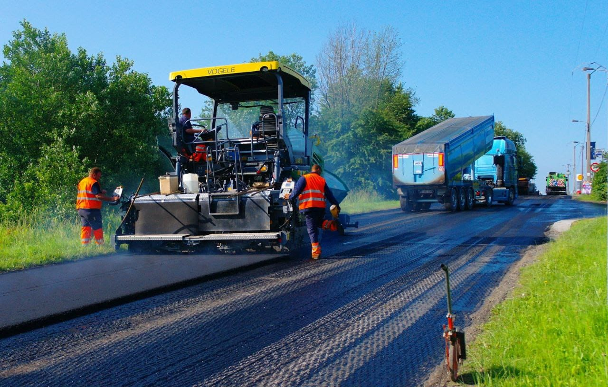

Ямочный ремонт

Наша компания выполняет ямочный ремонт на дорогах, тротуарах, парковках и других покрытиях, где возникают дефекты и просадки. Ямы и углубления на дорогах могут создавать серьезные проблемы для водителей и пешеходов, поэтому мы предоставляем быстрое и эффективное решение для их устранения.
Если вам нужен ямочный ремонт на дороге, тротуаре или в любом другом месте, свяжитесь с нами. Наша команда специалистов предложит эффективные решения и мгновенный ремонт, чтобы покрытие стало снова гладким и безопасным.
Одна из особенностей нашей работы — скорость и эффективность исполнения.
Каждый проект выполняется с учетом индивидуальных потребностей и требований наших клиентов. Подберём наиболее подходящий вариант ремонта, в зависимости от размера и глубины повреждения, типа поверхности, потребностей в износостойкости и т. д.
Наша компания предлагает конкурентные цены на все наши услуги по ямочному ремонту. Мы ценим наших клиентов и всегда стараемся предложить им наилучшие условия и качество работы.
Если вам нужна ямочный ремонт на дороге, тротуаре или в любом другом месте, свяжитесь с нами. Наша команда специалистов готова предложить вам эффективные решения и мгновенный ремонт, чтобы покрытие стало снова гладким и безопасным.
Режим
24/7
Скидки
д
о
10%
Опыт
10
л
е
т
Виды работ
Устройство временных дорог
Подробнее
Ремонт асфальтового покрытия
Подробнее
Подсыпка дорог
Подробнее
Наши Услуги
- от 550 Р/М 2 Подробнее
АСФАЛЬТИРОВАНИЕ ДОРОГ И ТЕРРИТОРИЙ
- от 200 Р/М 2
 Подробнее
ПодробнееСТРОИТЕЛЬСТВО
ДОРОГ - от 160 Р/М 2
 Подробнее
ПодробнееАСФАЛЬТНАЯ
КРОШКА - от 650 Р/М 2 Вы на странице ямочный ремонт
Ямочный
ремонт - от 150 Р/М 2
 Подробнее
ПодробнееБЛАГОУСТРОЙСТВО
ТЕРРИТОРИЙ - от 120 Р/М 2
 Подробнее
ПодробнееДОПОЛНИТЕЛЬНЫЕ
ДОРОЖНЫЕ РАБОТЫ - Асфальтирование дорог Строительство дорог АСФАЛЬТНАЯ КРОШКА ЯМОЧНЫЙ РЕМОНТ БЛАГОУСТРОЙСТВО ТЕРРИТОРИЙ ДОПОЛНИТЕЛЬНЫЕ ДОРОЖНЫЕ РАБОТЫ
Чтобы узнать точную стоимость работ,
запишитесь на бесплатную консультацию
Оставляя заявку, вы соглашаетесь на обработку персональных данных
Контакты
Наш адрес:
г.Домодедово, Рабочая улица, 44.Наш e-mail:
rus-dorstroy24@yandex.ru +7 906 040-00-30
+7 906 040-00-30
Мы в Whatsapp